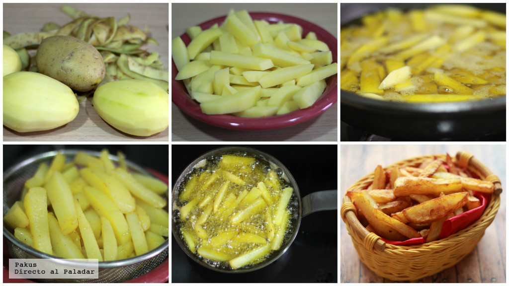

Papitas mmmm
Receta
Ingredientes
- Patatas 3
- Aceite de girasol 1l
- Sal al gusto
Pasos
Para preparar las patatas fritas es necesario...
- Pelar las patatas.
- Cortar las patatas en rodajas de 1 cm de grosor aproximadamente.
- Cortar cada rodaja en varitas de 1 cm de ancho y unos 5 de largo.
- Una vez picadas las patatas, recomendamos dejarlas en remojo en un plato hondo (limitando el remojo a unos 15 minutos).
- Para freír bien las patatas hacen falta dos sartenes, una para la primera parte del proceso en la que freiremos las varitas de patata a 140º durante unos 7 u 8 minutos, y otra para la segunda fase, en la que doraremos y dejaremos crujientes las patatas friéndolas a 190º durante unos cinco minutos más.
- Las patatas fritas guardan muy bien el calor. Por eso no hay problema en dejarlas reposar sobre papel absorbente de cocina para retirar el exceso de aceite que puedan haber retenido.
